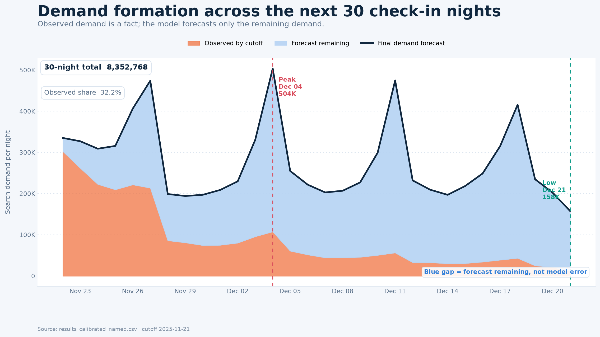
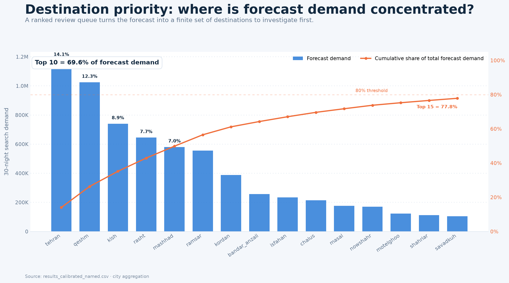
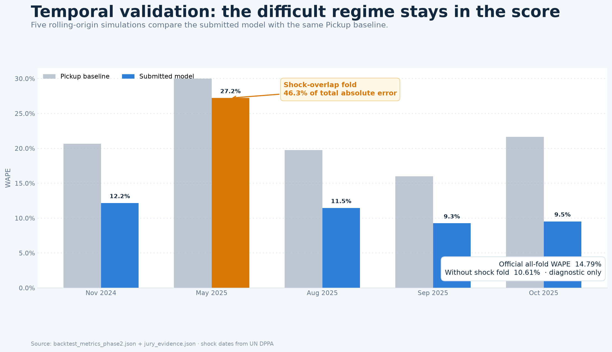
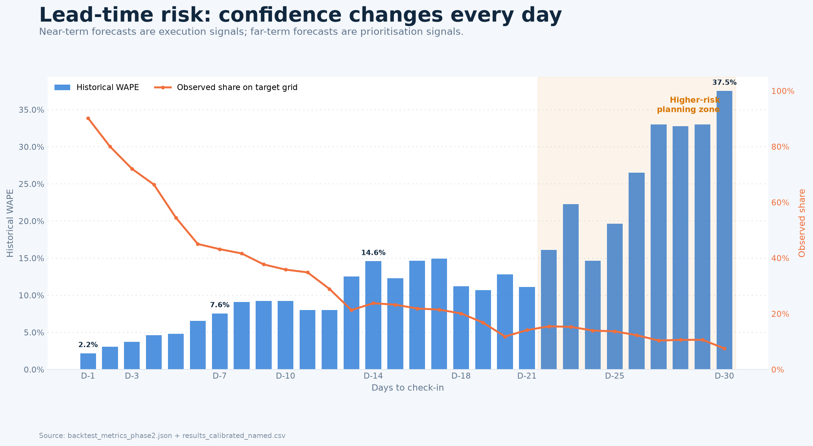
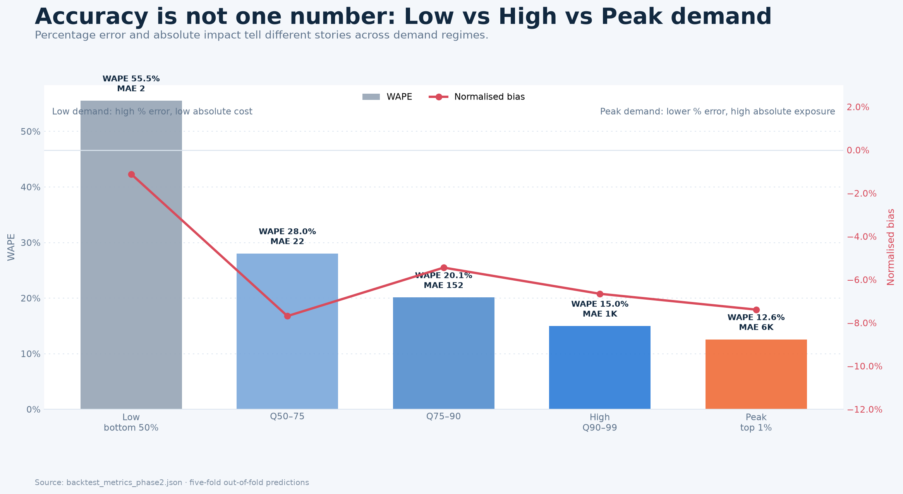
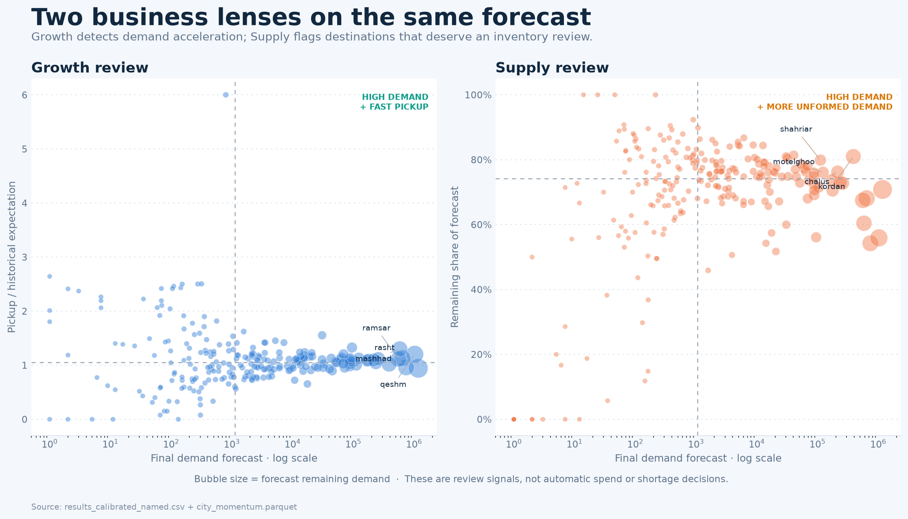
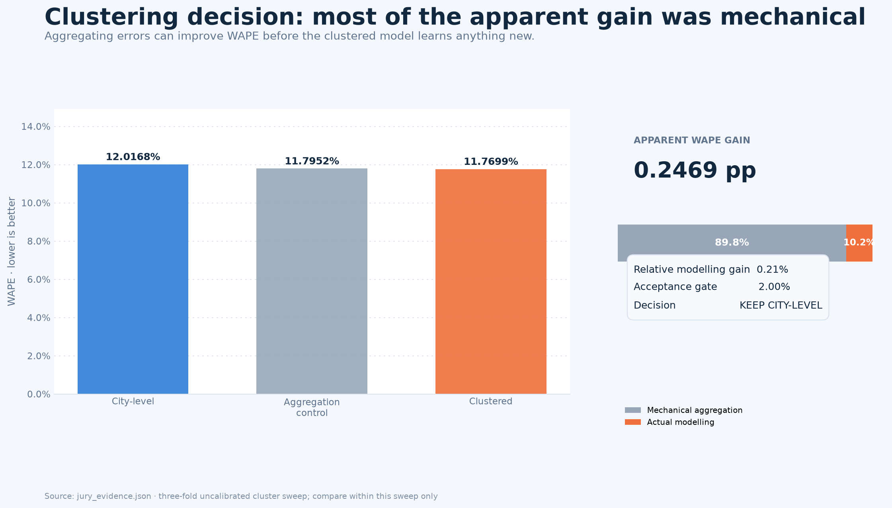

Our problem was not predicting a single number. Search demand builds gradually, right up to check-in. A destination team that sees only the searches logged so far can spot a rising destination too late; a team that sees only a final forecast cannot tell how much of it is recorded fact and how much is model estimate. We built an early-warning signal across 321 destinations and the next 30 nights that separates the two.
Transition: So our first technical decision was not to re-predict total demand — only the part that is still unknown.

The data has two clocks: log_date is when a search happened, check-in is when the trip is for. At the cutoff, the orange area is genuinely observed and the model never touches it. The blue area is demand that has not happened yet — that is what the model forecasts. The dark line is the sum, and it is our output. In the current grid 32.2% of demand is already observed and 67.8% still has to be predicted. Naturally that blue gap is wider for nights further out.
Do not say: the blue band is uncertainty or a confidence interval. It is a point forecast of remaining demand.
Transition: A forecast only matters if it turns into a decision you can actually act on.

The goal is not for an analyst to review all 321 cities at once. The bars are each city's forecast; the orange line is cumulative share of total demand across all 321. Ten destinations cover 69.6%. So the model output becomes a ranked review queue: the team spends its limited time first where exposure is largest.
Wording: "prioritise investigation" — never "automatically allocate campaign budget".
Transition: For that queue to be trusted, we have to show the data contract and model design behind it.
We start from 3.298M sparse search rows, controlling duplicates, invalid dates and lead time. The trainset is built on a time grid: 321 cities × 752 days × 11 historical snapshots = 2.655M rows, with no row cap. 66 features across Pickup, Velocity, Activity, Calendar, City History, Market and Province — every one of them computable on the real submission grid. The target is remaining demand with log1p to damp the right skew. One LightGBM for D1–D14, one for D15–D30. Finally guarded calibration is applied, and the observed floor prevents any forecast falling below already-observed search.
If asked which features matter: city_weekday_mean, city_hist_mean and the pickup-based features. Full list is in the technical report — do not read 66 names from a slide.
Transition: This architecture only matters if it beats the baseline at several historical points, without looking ahead.

Our evaluation is not a random split. Five rolling-origin folds simulate what was knowable at each historical cutoff — 48,150 out-of-train predictions in total. The model beats the pickup baseline on all five folds, taking pooled WAPE from 22% to 14.79%: a 32.8% relative gain.
The orange bar is the important part. The May fold's target window overlaps the start of the Iran–Israel war on 13 June. Its WAPE is 27.22% and it alone produces 46.3% of total absolute error. We did not remove it. The 10.61% figure without that fold is a sensitivity diagnostic, not the official score.
On events: the war is not a model feature — a sudden shock was not knowable at forecast time. Schedulable events stay out until we have an official, year-by-year, geographic, versioned calendar; lunar dates shift every year.
Do not say: Iran–US war (the artifact records Iran–Israel) · that fold overlap proves a causal effect · that 10.61% is the official score.
Transition: One overall WAPE still is not enough — confidence changes with distance to check-in.

Accuracy is not one constant. At D1 roughly 90% of demand in the current grid is already observed and historical WAPE is about 2.2%. At D30 only 7.5% is observed and WAPE reaches 37.5%. So a near-term forecast can enter tactical review, while a far-out forecast is for ranking and scenario planning — not a firm budget or capacity commitment. The product itself should surface that difference rather than attaching one confidence level to every date.
Transition: And it is not only time — the scale of demand changes the kind of risk too.

An overall WAPE can hide two different risks. In the low-demand half the denominator is tiny, so WAPE looks like 55.5% while MAE is about two searches. In the top 1% WAPE is better at 12.6%, but MAE is close to 5.9 thousand searches and the business exposure is far larger. So for decisions we read WAPE alongside bias, MAE, sample size and actual volume. The same breakdown is filterable by province, weekday and observation state in the dashboard.
Transition: Put scale, momentum and confidence together and the forecast becomes two concrete workflows.
High demand + faster-than-expected pickup
High demand + high remaining share

In Growth, the top right holds destinations with both high demand and pickup running faster than their own history — first in line for content and campaign-calendar review. In Supply, destinations with high demand and a high remaining share are first for inventory and host-acquisition review. But search alone does not prove conversion, revenue or shortage. A financial decision needs booking, available inventory, margin and campaign exposure joined at this same grain.
In two days we went from data validation and trainset construction to a final forecast, rolling-origin evaluation, calibration, lead-time and demand-segment diagnostics, and an inspectable dashboard. The achievement is not only a better WAPE; it is a system that says where to look, how much demand is still unknown, and when not to over-trust the forecast. The next step is connecting booking and inventory data and testing this review queue in a controlled pilot.
Closing line — say it exactly: Novo Pulse is an early, auditable, segment-aware forecast that also shows the boundary of its own confidence.

We tested clustering to pool low-data cities. WAPE appeared to fall from 12.0168% to 11.7699% — but the aggregation control showed 89.8% of that drop was purely mechanical: merging rows lets positive and negative errors cancel before the absolute value is taken. The true relative modelling gain was only 0.21%, failing our pre-declared 2% gate. Since clustering also destroys city-level decision granularity, we kept the city-level model.
Essential caveat: these are a three-fold uncalibrated sweep, comparable only within that experiment. Do not compare them to the final model's five-fold calibrated WAPE. If pressed: on five identical folds with identical calibration, city is 0.1479 and cluster is 0.1487 — clustering is still not better.
| Variant | WAPE | Bias | Outcome |
|---|---|---|---|
| Raw model | 15.51% | −9.86% | — |
| Guarded calibration | 14.79% | −6.82% | selected |
| Aggressive candidate | 17.22% | −1.34% | rejected |
The goal was never to drive bias to zero at any cost. The aggressive candidate nearly eliminated bias but damaged WAPE, so the guardrail refused it. Guarded calibration was accepted only because it held or improved accuracy at the same time. Selection in the prequential setup uses only fully-closed earlier folds.
If asked whether raw and calibrated are two models: no — the boosters are byte-identical. Calibration is post-processing applied to the remaining part only.
| Check | Result |
|---|---|
| Duplicate city × check-in keys | 0 |
| Negative or NaN predictions | 0 |
| Observed-floor violations | 0 |
| Official file | artifacts/pol4/results.csv |
Critical distinction if a judge scores the file: the 14.79% is five-fold historical backtest accuracy, not the measured accuracy of results.csv. The Azar window has no actuals in our data, so results.csv is unscored by construction. Our closest estimate of what a judge would measure is the same calendar window one year earlier: 12.17% WAPE, bias +0.8%. Five-fold uncertainty is wide: 9.8%–22.2%.
Also useful: 32.2% of this file is already observed, so error on that portion is zero by construction. The forecast total is +23.1% year over year, which is conservative next to the two most recent comparable windows at +29.4% and +35.9%.
These limitations are not hidden failures — they define the data contract for the next stage.